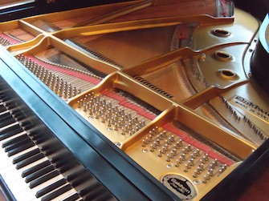

<br>
#### Week 1: Introduction
3 Ideas for final project:
Idea 1: Acoustic pianos typically have 3 foot pedals that alter the timbre of the strings. I would like to design a portable, 4th pedal (on the left side) that can play harmonics in the middle register of the piano. Using the fender rhodes sustain pedal as a starting off point.
<img src="../images/rhodespedal.jpg" alt="rhodespedal" width="220" height="237">
Idea 2: Charge your phone by converting the kinetic energy from playing the piano into electricity.
Idea 3: Create an "arm" that attaches to the piano bench where a laptop, effects pedals, typing keyboard, ect... can be easily be placed. The "arm" can be moved and locked to varying locations so that the pianist can quickly put it in front of them or to the side during a performance.

<img src="../images/pianopedals.jpg" alt="piano pedals" width="334" height="251">
<div class="container-fluid bg-2 text-center">
<div class="row">
<div class="col-sm-4">
Pre-existing models to draw from:
<iframe width="560" height="315" src="https://www.youtube.com/embed/EDU5SvI-xYU?si=vmXXRdoRW3eG5YNa" title="YouTube video player" frameborder="0" allow="accelerometer; autoplay; clipboard-write; encrypted-media; gyroscope; picture-in-picture; web-share" allowfullscreen></iframe>
</div>
<div class="col-sm-4">
And this too
<iframe width="560" height="315" src="https://www.youtube.com/embed/ACsy6xSIBm8?si=QrGoyDm-aOFnIqGn" title="YouTube video player" frameborder="0" allow="accelerometer; autoplay; clipboard-write; encrypted-media; gyroscope; picture-in-picture; web-share" allowfullscreen></iframe>
</div>
</div>